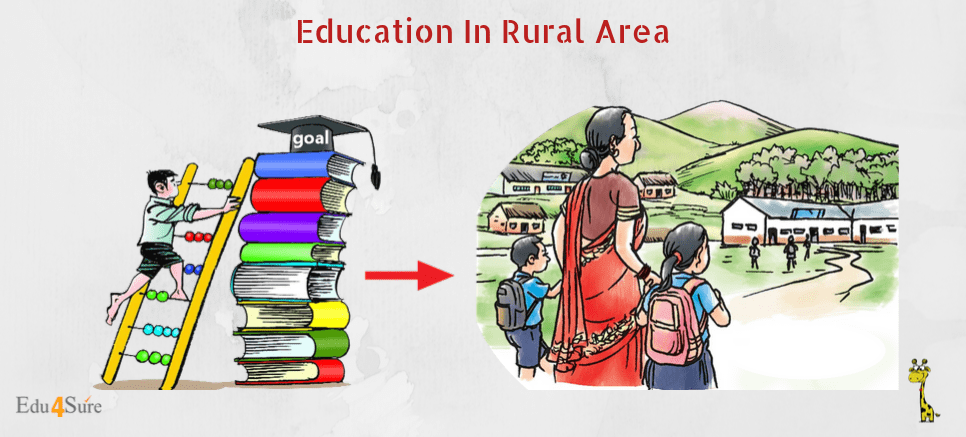
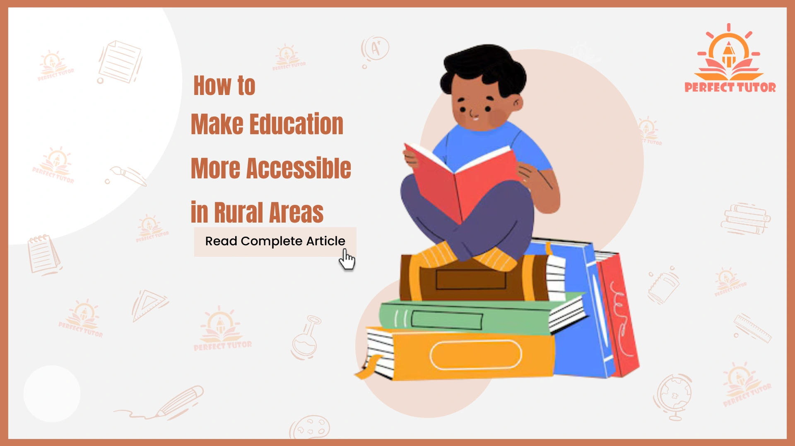
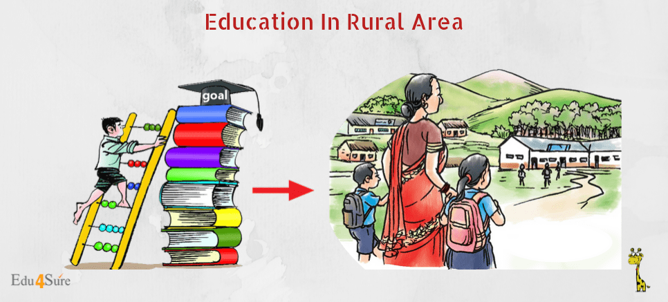
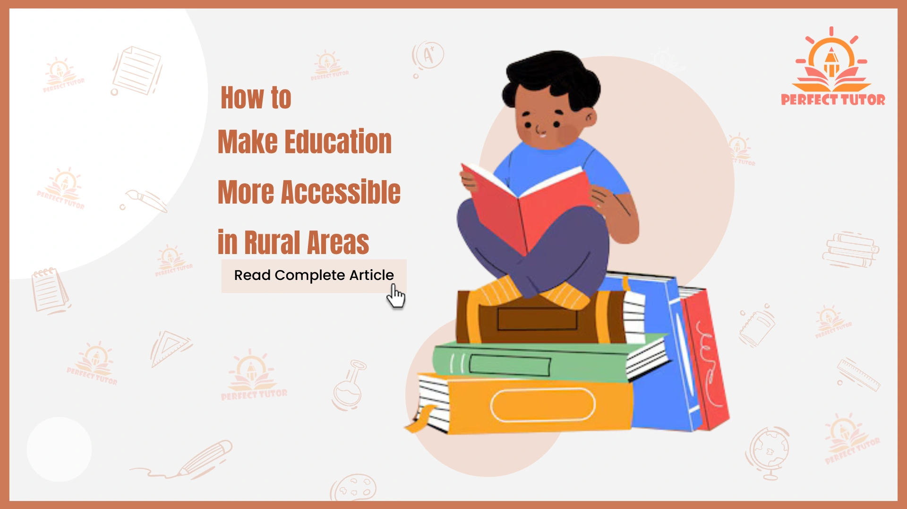

Welcome to Rural Opportunity Net
At Rural Opportunity Net, our mission is to uplift rural communities through access to quality education. We’re bridging the digital divide by offering free resources, mentorship, and awareness about online learning platforms.
📸 Project Snapshots
 



🤝 Support Rural Education
Here are some trusted platforms where you can contribute or learn more: